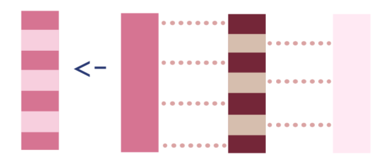

A helper post to TMLE Part II: The Algorithm containing only formulas and graphics.
A condensed key for my corresponding TMLE tutorial blog post.
Initial set up
 Estimand of interest:
Estimand of interest:
\[ATE = \Psi = E_W[\mathrm{E}[Y|A=1,\mathbf{W}] - \mathrm{E}[Y|A=0,\mathbf{W}]]\]
Step 1: Estimate the Outcome
First, estimate the expected value of the outcome using treatment and confounders as predictors.
\[Q(A,\mathbf{W}) = \mathrm{E}[Y|A,\mathbf{W}]\] 
Then use that fit to obtain estimates of the expected outcome under varying three different treatment conditions:
1. If every observation received the treatment they actually received.
\[\hat{Q}(A,\mathbf{W}) = \mathrm{\hat{E}}[Y|A,\mathbf{W}]\]
2. If every observation received the treatment.
\[\hat{Q}(1,\mathbf{W}) = \mathrm{\hat{E}}[Y|A=1,\mathbf{W}]\]

3. If every observation received the control.
\[\hat{Q}(0,\mathbf{W}) = \mathrm{\hat{E}}[Y|A=0,\mathbf{W}]\]

Step 2: Estimate the Probability of Treatment
The next step is to estimate the probability of treatment, given confounders.
\[g(\mathbf{W}) = \mathrm{Pr}(A=1|\mathbf{W})\] 
Then we need to compute three different quantities from this model fit:
1. The inverse probability of receiving treatment.
\[H(1,\mathbf{W}) = \frac{1}{g(\mathbf{W})} = \frac{1}{\mathrm{Pr}(A=1|\mathbf{W})}\]

2. The negative inverse probability of not receiving treatment.
\[H(0,\mathbf{W}) = -\frac{1}{1-g(\mathbf{W})}= -\frac{1}{\mathrm{Pr}(A=0|\mathbf{W})}\]

3. If the observation was treated, the inverse probability of receiving treatment, and if they were not treated, the negative inverse probability of not receiving treatment.
\[H(A,\mathbf{W}) = \frac{\mathrm{I}(A=1)}{\mathrm{Pr}(A=1|\mathbf{W})}-\frac{\mathrm{I}(A=0)}{\mathrm{Pr}(A=0|\mathbf{W})}\]

Step 3: Estimate the Fluctuation Parameter
Estimating equation we need to solve:
\[logit(\mathrm{E}[Y|A,\mathbf{W}]) = logit(\mathrm{\hat{E}}[Y|A,\mathbf{W}]) + \epsilon H(A,\mathbf{W})\] Two technical points for application: we use qlogis to transform the probabilities \(\mathrm{\hat{E}}[Y|A,\mathbf{W}]\) to the \(logit\) scale. Also, the R code for a fixed intercept is -1 + offset(fixed_intercept).
Next we need to save the coefficient from that logistic regression, which we will call \(\hat{\epsilon}\):

Step 4: Update the Initial Estimates of the Expected Outcome
Note we can use \(expit\) to show the inverse of the \(logit\) function, and we will denote updates to the outcome regressions as \(\hat{\mathrm{E}}^*\).
1. Update the expected outcomes of all observations, given the treatment they actually received and their baseline confounders.
\[\hat{\mathrm{E}}^*[Y|A,\mathbf{W}] = expit(logit(\mathrm{\hat{E}}[Y|A,\mathbf{W}]) + \hat{\epsilon}H(A,\mathbf{W}))\]
2. Update the expected outcomes, conditional on baseline confounders and everyone receiving the treatment.
\[\hat{\mathrm{E}}^*[Y|A=1,\mathbf{W}] = expit(logit(\mathrm{\hat{E}}[Y|A=1,\mathbf{W}]) + \hat{\epsilon}H(A,1))\] 
3. Update the expected outcomes, conditional on baseline confounders and no one receiving the treatment.
\[\hat{\mathrm{E}}^*[Y|A=0,\mathbf{W}] = expit(logit(\mathrm{\hat{E}}[Y|A=0,\mathbf{W}]) + \hat{\epsilon}H(A,0))\]
Step 5: Compute the Statistical Estimand of Interest
We now have updated expected outcomes estimates, so we can compute the ATE as the mean difference in the updated outcome estimates under treatment and no treatment:
\[\hat{ATE}_{TMLE} = \hat{\Psi}_{TMLE} = \sum_{i=1}^{n}[\hat{E^*}[Y|A=1,\mathbf{W}] - \hat{E^*}[Y|A=0,\mathbf{W}]]\]
Step 6: Calculate the Standard Errors, Confidence Intervals, and P-values
To obtain the standard errors, we first need to compute the Influence Curve (IC). The equation for the IC looks like this:
\[\hat{IC} = (Y-\hat{E^*}[Y|A,\mathbf{W}])H(A,\mathbf{W}) + \hat{E^*}[Y|A=1,\mathbf{W}] - \hat{E^*}[Y|A=0,\mathbf{W}] - \hat{ATE}\]
Once we have the IC, we can take the square-root of its variance divided by the number of observations to get the standard error of our estimate.
\[\hat{SE} = \sqrt{\frac{var(\hat{IC})}{N}} \]
 Once we have that standard error, we can easily get the 95% confidence interval and p-value of our estimate.
Once we have that standard error, we can easily get the 95% confidence interval and p-value of our estimate.
A visual guide designed as a printable reference is available on my Github: